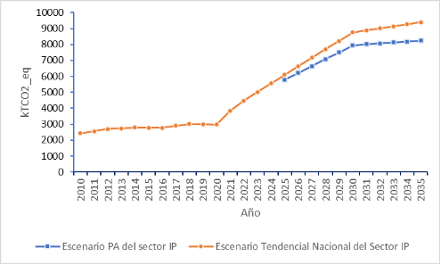

5.4. Resultados
Las Figura 5.2 presenta una comparación entre las trayectorias de emisiones de GEI del Escenario Tendencial Nacional y el Escenario Plan de Acción del PLANMICC, el color naranja corresponde a el Escenario Tendencial Nacional modelado desde el 2010, mientras que la línea de color azul corresponde a el escenario Plan de Acción que incorpora las iniciativas de mitigación aplicables al sector Procesos Industriales, incluyendo la sustitución de clínker por adiciones en la producción de cemento y la reducción progresiva del consumo de hidrofluorocarbonos (HFC) conforme a la Enmienda de Kigali al Protocolo de Montreal.

Figura 5.2 Evolución de las emisiones de gases de efecto invernadero del sector Procesos Industriales.
Los resultados muestran que, aunque las emisiones mantienen una tendencia creciente en ambos escenarios, la implementación de estas medidas permite reducir la trayectoria de crecimiento de las emisiones respecto al escenario tendencial, evidenciando el efecto de las acciones de mitigación previstas para el período 2025–2035.